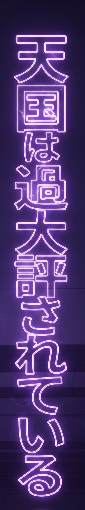
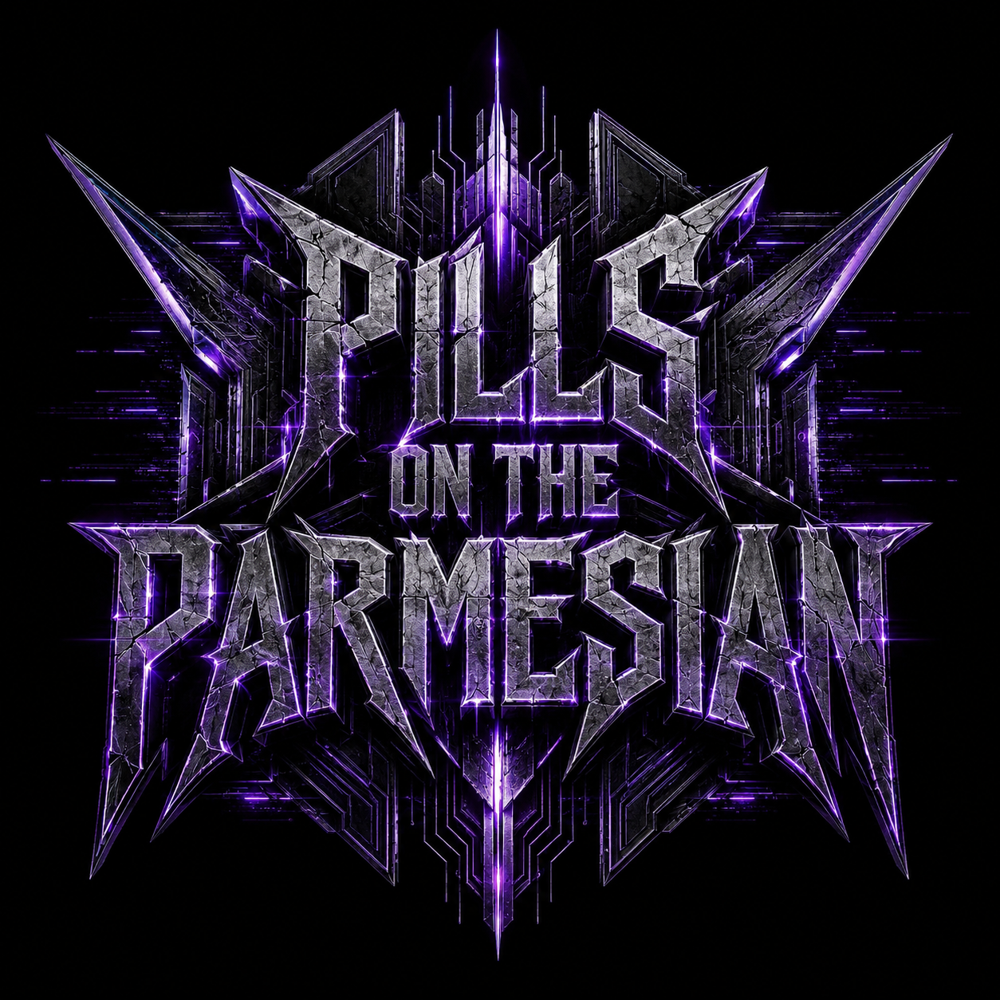

The Signal That Survives
Purple lightning through a dead city. Ethereal vocals cut through the static. This is what's left when the noise takes everything else.


Purple lightning through a dead city. Ethereal vocals cut through the static. This is what's left when the noise takes everything else.